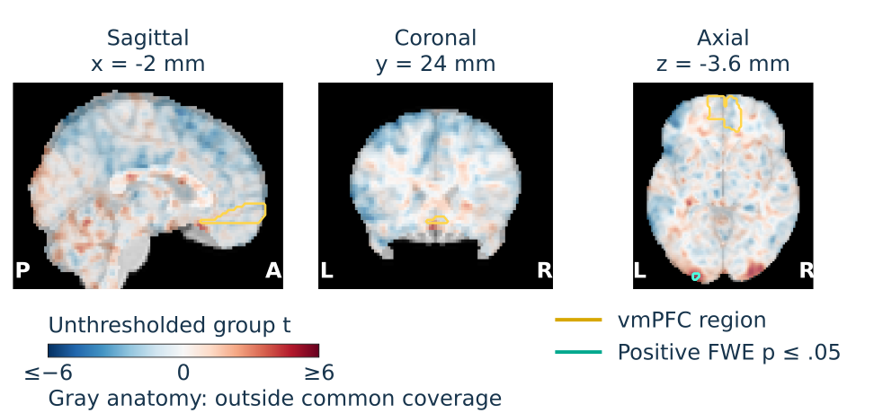

US-RSE 2026 · Research in the open
STAMPED in PracticeImproving research skills through
reproducible experiments
Our experiment: iteratively improve STAMPED research skills by validating the scientific results and research objects they produce.
Make the improvement process inspectable.Link the skills, data, runs, assessments and revisions, so others can evaluate both the science and how the guidance evolved.
01 · STAMPED
The seven principles
- Self-contained
- Reach all essential components from one project root.
- Tracked
- Identify every component and record changes and computational provenance.
- Actionable
- Provide executable procedures and reproduction instructions.
- Modular
- Separate components for reuse and recombination.
- Portable
- Version environment specifications and avoid undocumented host dependencies.
- Ephemeral
- Run in fresh, disposable environments built from recorded specifications.
- Distributable
- Make components persistently retrievable in their recorded state, with explicit licenses.
Each principle is a spectrum, supporting incremental improvement. STAMPED paper.
The experiment
Test the skills
through the work
Do successive revisions improve scientific adequacy, reproducibility and consistency?
- RunFresh agents address the same scientific question.
- AssessIndependent judges inspect the research object and attempt replay.
- ReviseUse recurring findings to improve and compress the skills.
- RepeatTest the next pinned revision with fresh agents.
Three iterations of testing and revision. In the final iteration, evaluate without further tuning.
The study is itself a research object
Follow the evidence
Inspect both the scientific result and the decisions that shaped the experiment through the repository map. Apply the STAMPED checklist to your own research object.
02 · Scientific results
Replicating a gain-response analysis
Tom et al. asked how the brain represents potential gains and losses during risky choices.
Our replication: does potential gain increase ventromedial prefrontal cortex (vmPFC) activity? Agents test NARPS H1 using the same 54 equal-indifference AO86 participant maps.
Group-level gain response

24 posterior voxels survived correction; none overlapped the analysis’s Harvard–Oxford vmPFC proxy.
Where do repeated analyses agree?

Use STAMPED. Try the skills. Bring us a study.
Share a hypothesis, accessible data and a reference result. Help us test the skills on your science—and discuss what better guidance should do.
 Study + data
Study + data
 Use the skills
Use the skills